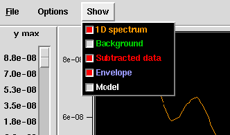

CTF match
A tool for analyzing the output from SPIDER's 'TF ED' operation
Wait! First try out ctfdemo.
Type "ctfdemo" at the Unix prompt, and experiment with the various CTF parameters used in SPIDER.
Did you try that out? Good. Now you're ready for ctfmatch.
Overview
Command line usage
Controls
Options
References

Overview
ctfmatch is a program for looking at the output of SPIDER's
TF ED
operation. It displays the 1D spectrum (the CTF), the estimated background,
the background-subtracted spectrum,
an envelope function, and a model function.
You can use ctfmatch to
- Manually estimate the CTF of a micrograph, just as you use WEB: CTF from doc file,
- Quickly scan through a file series to check if the automatically determined defocus values make sense.
Typical use:
- On a set of micrographs, generate 2D power spectra with the batch file
power.spi.
- Estimate defocus with the 'TF ED' operation via the
defocus.spi procedure.
This outputs a set of doc files with various curves, as well as a doc file
containing the defocus estimates.
-
- Run ctfmatch.
- - Set the correct parameters,
- Read in the set of curve files generated by TF ED,
- Read in the defocus doc file,
- Select a file to display. Adjust the model parameters if necessary.
- You can save the new defocus values to a file, if you want.
Command line usage
Usage: ctfmatch [-keyword value] tfed_file_pattern*
where the tfed_files are doc files output from the TF ED
command with 4 columns:
spatial frequency, background, subtracted data, envelope.
The other arguments are (-keyword value) pairs, where the keyword is denoted with a minus sign.
The following keywords are supported:
-defocus | defocus doc file with defocus values in column 2 |
-cs | (spherical aberration) |
-kev | (electron energy) |
-pixsize | (Ang./pixel) |
-src | (source size) |
-spread | (defocus spread) |
-acr | (amplitude contrast ratio) |
-gep | (Gaussian envelope parameter) |
As soon as an argument is encountered with no preceding keyword, it is assumed that it and all following
arguments are tfed files.
Examples:
ctfmatch -defocus defocus.dat power/ctf*
(program will prompt user for parameters)
ctfmatch -cs 2.20 -kev 200 -pixsize 2.82
(user can enter TFED files through "FILE -> Open File series")
ctfmatch -pixsize 3.76 ctf0034.dat
ctfmatch -help

Controls
There are a number of slider controls that interactively alter parameters
in the displayed curves.
- Model sliders
- As in ctfdemo, values for defocus, source size, defocus spread, and the
Gaussian envelope may be adjusted
with the slider controls. Other parameters (pixel size, electron energy,
spherical aberration, and amplitude
contrast raio) are set in the Options :: Parameters menu.
These values only affect the model data (shown in the white curve).
- Graph sliders
- Because of the great dynamic range of the data, the ranges of the graph can be adjusted:
- ymax : adjusts the maximum value on the vertical axis
- model height : adjusts the height of the model data
- xmin : adjusts the left hand side of the graph
- reset ymax button : when xmin of the graph is changed, the data can be rescaled
accordingly with this button.

- Show Menu
- The Show menu lets you turn the various curves on or off. A curve will
be displayed if its box is red
(or a checkmark on some systems). As curves are toggled on and off, the
maximum height (ymax) of the
graph is automatically adjusted to use the entire area for display.

Options
- Parameters
- Lets the user set values for pixel size, electron energy, spherical aberration,
and amplitude contrast ratio.
- Squared data
- Because the procedure file power_p1.bat takes the
\square root of the spectrum, ctfmatch is automatically squares the TF ED data it reads in.
This is to ensure that the model parameters are in the same units as the data. Thus by default, the
Squared data box is checked. Unchecking this box displays the square root of all the curves
(i.e., the unsquared data).
- Grid
- Toggles a grid on and off.
- Use empirical envelope
- Forces the model to fit under the empirically derived envelope (the blue curve).
When this option is in effect, various
model parameters affecting the envelope, such as source size and defocus spread,
are no longer used to compute the
displayed model curve.
References
For details about the TF ED operation, see the manual page, and
Z. Huang, P.R. Baldwin, and P. A. Penczek. Automated determination of parameters
describing power spectra of micrograph
images in electron microscopy J. Struct. Biology Vol. 144, Issues 1-2, October 2003, pp. 79-94.
Back to index